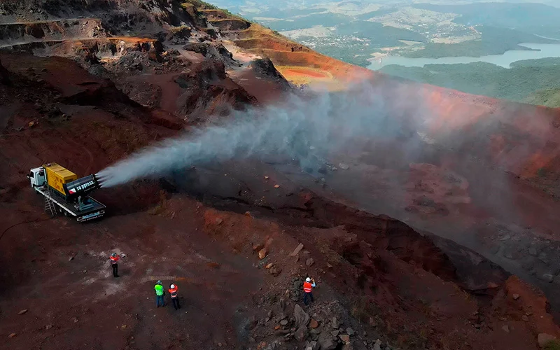
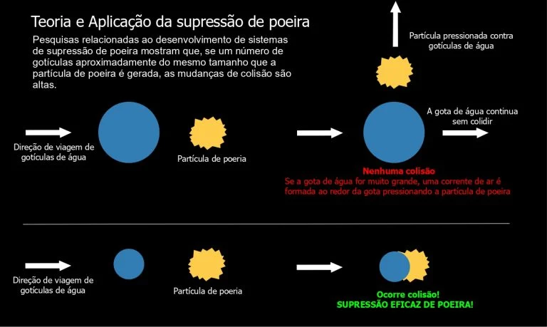

5 Casos Reais de Sucesso com Canhões de Névoa para Controle da Poeira na Mineração
Da Fundação Renova à Vale: como os canhões de névoa Suppress resolveram desafios reais de controle de particulado em operações de mineração.

O controle de poeira na mineração é uma exigência legal, uma responsabilidade com os trabalhadores e uma condição para a manutenção da licença social de operação. Nos últimos anos, os canhões de névoa para supressão de poeira emergiram como uma das tecnologias mais eficazes para atender a essa demanda, combinando alcance, eficiência hídrica e flexibilidade operacional em um único equipamento.
Mas a eficácia de qualquer tecnologia se prova no campo, não nos catálogos. Neste artigo, apresentamos cinco casos documentados de mineradoras, siderúrgicas e operações de remediação ambiental que adotaram os canhões de névoa da Suppress, e os resultados que obtiveram.
A importância de controlar a poeira na mineração
A geração de poeira é inerente às operações de mineração. Desde a perfuração e detonação na frente de lavra até o transporte, britagem, peneiramento e empilhamento de minério, cada etapa do processo produtivo libera material particulado no ar. Em condições de baixa umidade e vento, a dispersão pode atingir comunidades do entorno, comprometer a visibilidade para operadores de equipamentos e acumular concentrações perigosas de partículas finas nos pulmões dos trabalhadores.
A exposição à poeira mineral na mineração está associada a doenças graves e irreversíveis como a silicose, a DPOC e o câncer de pulmão, patologias que a legislação brasileira, por meio da NR-9, da NR-22 e das regulamentações da ANM, busca prevenir por meio de limites de exposição ocupacional e da exigência de sistemas ativos de controle. Além dos riscos à saúde, a poeira não controlada gera multas ambientais, embargos de áreas de lavra e danos à reputação da empresa perante comunidades e órgãos licenciadores.
Riscos à saúde: muito além da poeira visível
Uma das principais armadilhas do controle de poeira na mineração é a tendência a avaliar o risco apenas pela poeira visível a olho nu. As partículas que causam mais dano, aquelas com diâmetro inferior a 4 microns, capazes de atingir os alvéolos pulmonares, são invisíveis e podem permanecer em suspensão por horas após a geração. Segundo a Organização Mundial da Saúde (OMS), trabalhadores expostos sistematicamente à poeira mineral apresentam risco até 30% maior de desenvolver doenças respiratórias graves.
Entre as principais doenças associadas à exposição à poeira na mineração estão:
- Silicose: doença pulmonar incurável causada pelo acúmulo de partículas de sílica cristalina nos pulmões, com progressão para fibrose e insuficiência respiratória
- DPOC: redução progressiva e irreversível da capacidade respiratória, com impacto direto na qualidade de vida e na capacidade de trabalho
- Asma ocupacional: inflamação crônica das vias aéreas agravada ou desencadeada pela exposição a poeiras minerais
- Câncer de pulmão: risco elevado em exposições prolongadas a sílica cristalina, classificada como carcinogênico do Grupo 1 pela IARC
A boa notícia é que todas essas doenças são evitáveis com o controle adequado das emissões de poeira na fonte. Os métodos de controle de poeira respirável, quando implementados corretamente, reduzem as concentrações de particulado a níveis seguros para os trabalhadores.
Estratégias para mitigação da poeira na mineração
Existem duas categorias principais de intervenção no controle de poeira na mineração:
Métodos preventivos (antes da emissão)
Os métodos preventivos atuam antes que a poeira seja liberada no ar, buscando reduzir ou eliminar a fonte de emissão:
- Umidificação do material durante o transporte
- Aplicação de selantes poliméricos em pilhas de estocagem e solos
- Enclausuramento de transportadores e britadores
- Revegetação de taludes e áreas degradadas
Métodos corretivos (após a emissão)
Quando a poeira já foi gerada e se encontra em suspensão, os métodos corretivos buscam capturá-la e precipitá-la antes que se disperse:
- Caminhões pipa para umedecimento de vias
- Barreiras físicas e corta-ventos
- Sistemas de exaustão e filtração
- Canhões de névoa para captura de particulado em suspensão
Na prática, a maioria das operações de mineração adota uma combinação de métodos preventivos e corretivos. Os canhões de névoa se diferenciam dos sistemas de aspersão convencionais justamente por atuarem sobre a poeira já em suspensão: as microgotículas geradas têm tamanho compatível com as partículas de poeira fina, permitindo que estas se aglomerem às gotas de água, ganhem massa e precipitem rapidamente.

Como funciona a tecnologia dos canhões de névoa Suppress
Os canhões de névoa da Suppress combinam um ventilador de alta pressão com um sistema de atomização de água para lançar uma névoa ultrafina, com gotículas de 50 a 200 microns, a distâncias de até 150 metros. O ventilador gera o fluxo de ar necessário para carregar as gotículas até a nuvem de poeira, enquanto a atomização garante que o tamanho médio das gotículas seja compatível com o das partículas de poeira que se deseja capturar.
Diferenciais técnicos dos equipamentos
- Bicos intercambiáveis com ajuste de granulometria da névoa
- Bombas de alta pressão para pressurização constante
- Ventilação forçada com alcance de 15 a 150 metros conforme o modelo
- Rotação horizontal automática de até 350°
- Regulagem de elevação para diferentes geometrias de área
- Disponíveis nas versões fixo, móvel (rodas) ou montado em trailer
- Em conformidade com NR-10 e NR-12
A Suppress fabrica toda a sua linha de equipamentos no Brasil, o que garante suporte técnico ágil e disponibilidade de peças de reposição, um diferencial crítico para operações que não podem ter tempos de parada prolongados. Conheça a linha completa de canhões de névoa Suppress e suas especificações técnicas.
Onde os canhões de névoa são mais eficazes?
Os canhões de névoa apresentam melhor desempenho em pontos de geração de poeira com alto volume de emissão e área de cobertura moderada a ampla. As principais aplicações na mineração incluem:
Frentes de lavra
Após detonações e durante as operações de carregamento com pás carregadeiras e escavadeiras, a nuvem de poeira gerada pode atingir alturas consideráveis. O canhão de névoa, posicionado estrategicamente, age sobre a nuvem antes que o vento a disperse para além do perímetro da operação.
Descarga em britadores primários
A descarga de rocha no britador primário é um dos pontos de maior geração de poeira em toda a planta de processamento. O posicionamento de um canhão direcionado para o ponto de queda do material reduz significativamente a concentração de particulado na atmosfera da britagem primária.
Britagem e peneiramento
Todo o circuito de cominuição, britadores secundários, terciários e peneiras vibratórias, gera poeira contínua durante a operação. Nessas áreas cobertas ou semi-abertas, os canhões são complementados por cortinas de água e umidificação direta de material.
Pilhas intermediárias e pátios de estocagem
Em pilhas de material estocado, o vento é o principal vetor de emissão de poeira. O canhão de névoa cria uma cortina de umidade ao longo da face exposta ao vento, umedecendo a superfície e reduzindo a ressuspensão de particulado por efeito eólico. A rotação automática permite cobrir um arco amplo com um único equipamento.
Carregamento logístico
Durante o carregamento de caminhões, vagões ferroviários e navios, o material impactado gera nuvens de poeira no ponto de queda. Nos terminais portuários, onde os volumes são especialmente elevados, os canhões de névoa de alta vazão são frequentemente a única tecnologia capaz de dar conta da escala de emissão.
Gestão de efluentes
Além do controle de poeira, os evaporadores industriais baseados na tecnologia de atomização são utilizados no tratamento de efluentes líquidos em mineradoras, acelerando a evaporação de água de bacias de rejeito e reduzindo o volume de efluente a ser tratado ou armazenado.
5 casos reais de sucesso com canhões de névoa Suppress
1. Fundação Renova, Barra Longa, MG
Em um dos ambientes operacionais mais desafiadores da história da Suppress, dois canhões de névoa móveis, com geradores e reservatórios de água próprios, foram implantados para apoiar o gerenciamento de resíduos de barragem no município de Barra Longa (MG), no contexto das operações de remediação pós-rompimento de Mariana. Durante 16 meses contínuos de operação, os equipamentos controlaram a emissão de poeira durante a movimentação de grandes volumes de rejeito em áreas de acesso restrito e geometria irregular.
A operação foi reconhecida pelos órgãos ambientais competentes e ganhou visibilidade em programas de televisão de abrangência nacional. A diretora de operações da Fundação Renova registrou em depoimento: "Durante todo esse período a Suppress demonstrou conhecimento técnico, eficiência e profissionalismo."
2. Belocal/Lhoist
A Belocal, unidade brasileira do grupo belga Lhoist, um dos maiores produtores mundiais de calcário e cal —, instalou um canhão de névoa com alcance de 60 metros diretamente no britador primário de sua unidade operacional. A redução imediata das concentrações de poeira no entorno do britador e a melhoria nas condições de trabalho dos operadores foram tão expressivas que levaram ao projeto de implantação de equipamentos adicionais em outras unidades do grupo no Brasil.
3. Ferrous Mineração
A Ferrous Mineração adotou um canhão de névoa com 80 metros de alcance para controlar a geração de poeira na britagem intermediária e na pilha de estocagem de seu complexo mineiro. Uma característica operacional importante nesse caso foi o reposicionamento periódico do equipamento conforme a direção do vento, uma flexibilidade que os equipamentos fixos ou as cortinas d'água não conseguem oferecer. A mobilidade do canhão permitiu adaptar o ponto de atuação conforme as condições climáticas do dia, maximizando a eficiência de cada ciclo de operação.
4. Avanco Mineração (atual OZ Minerals)
A Avanco Mineração, adquirida pelo grupo australiano OZ Minerals, foi a primeira cliente da Suppress, em 2017. Dois canhões de névoa foram instalados nas pilhas intermediárias da operação e seguem em funcionamento contínuo até hoje, demonstrando a durabilidade e o baixo custo operacional dos equipamentos ao longo dos anos. A manutenção preventiva e o suporte técnico da Suppress garantiram disponibilidade operacional consistente ao longo de toda a vida útil documentada dos equipamentos.
5. Vale, Usina de Pelotização (MA)
A Vale, maior mineradora do mundo em volumes de minério de ferro, adotou dois canhões modelo A50 da Suppress para controlar a poeira gerada na pilha de finos de pelota da unidade de Ponta da Madeira, no Maranhão. O desafio técnico desse caso envolvia a alta salinidade da água disponível no porto, o que exigiu o desenvolvimento de um trailer customizado com sistema adicional de filtragem de água, garantindo que os bicos de atomização não fossem comprometidos pela presença de sais dissolvidos. A solução sob medida evidencia a capacidade da Suppress de adaptar seus equipamentos às exigências específicas de cada operação.
A Suppress como referência nacional em supressão de poeira
Fundada em 2014 com foco exclusivo no desenvolvimento e fabricação de canhões de névoa, a Suppress acumula mais de 130 equipamentos em operação em todo o território nacional. Entre seus clientes estão algumas das maiores empresas do setor mineral e industrial do Brasil: Anglo American, CBMM, Samarco, CSN, ArcelorMittal, Hydro e Usiminas, além dos casos detalhados acima.
Diferentemente de distribuidores de marcas importadas, a Suppress projeta, fabrica e dá suporte técnico a todos os seus equipamentos internamente. Isso garante tempos de resposta menores em manutenções corretivas, customizações possíveis quando a operação exige, e um acúmulo de conhecimento técnico sobre as particularidades de cada tipo de operação que se traduz em recomendações mais assertivas para cada novo cliente.
Para empresas que querem avaliar a tecnologia antes de comprar, a Suppress oferece o programa Try and Buy: que permite testar o equipamento em condições reais de operação, com suporte técnico completo durante o piloto, antes de qualquer decisão de aquisição.
Conclusão: mais que controle de poeira, compromisso com o futuro
Os cinco casos apresentados neste artigo demonstram que o controle eficaz de poeira na mineração não é um ideal inatingível, é um resultado consistentemente alcançável com a tecnologia adequada, a instalação correta e o suporte técnico contínuo. Da remediação ambiental de barragens à operação de um dos maiores portos minerários do mundo, os canhões de névoa da Suppress se mostraram capazes de responder a desafios operacionais de diferentes portes e naturezas.
Para as empresas que ainda enfrentam dificuldades com o controle de particulado em suas operações, a pergunta relevante não é "será que funciona?", mas "qual modelo é o mais adequado para a minha necessidade?". Entre em contato com a equipe técnica da Suppress para um diagnóstico gratuito da sua operação.
Perguntas Frequentes
Os canhões de névoa da Suppress são adequados para qualquer porte de mineração?
Sim. A linha Suppress abrange modelos de diferentes capacidades, do SP-15 (menor e mais móvel) ao SP-150e (alta vazão para operações de grande escala). Isso permite atender desde pequenas mineradoras até operações de grande porte como portos e usinas pelotizadoras, como demonstrado nos casos da Vale e da Ferrous Mineração.
Como a Suppress comprova a eficácia dos canhões de névoa na redução de particulado?
Por meio do programa Try and Buy, a Suppress disponibiliza o equipamento para testes reais na operação do cliente antes da aquisição. Durante o piloto, é possível instalar sensores de PM10 e PM2,5 para medir a concentração de poeira antes e depois da operação do canhão, fornecendo evidências documentadas de redução.
Qual foi o impacto dos canhões de névoa na operação de remediação da Fundação Renova?
Dois canhões de névoa móveis da Suppress operaram por 16 meses no gerenciamento de resíduos de barragem em Barra Longa (MG). A operação foi reconhecida pelos órgãos ambientais e ganhou destaque em programas de televisão nacional pelo controle eficaz de poeira durante a remediação, um ambiente operacional extremamente desafiador.
Quer resultados como esses na sua operação?
Solicite um diagnóstico gratuito